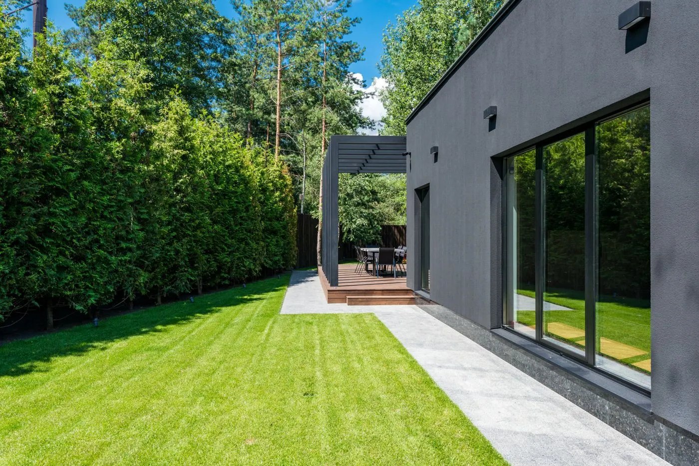
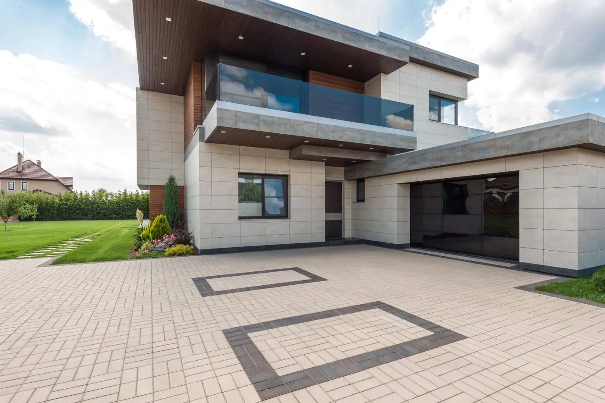
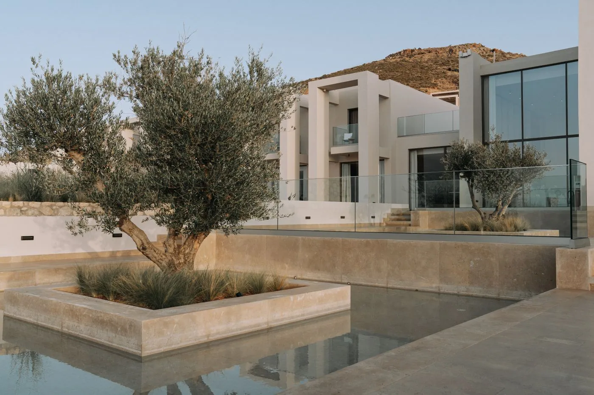
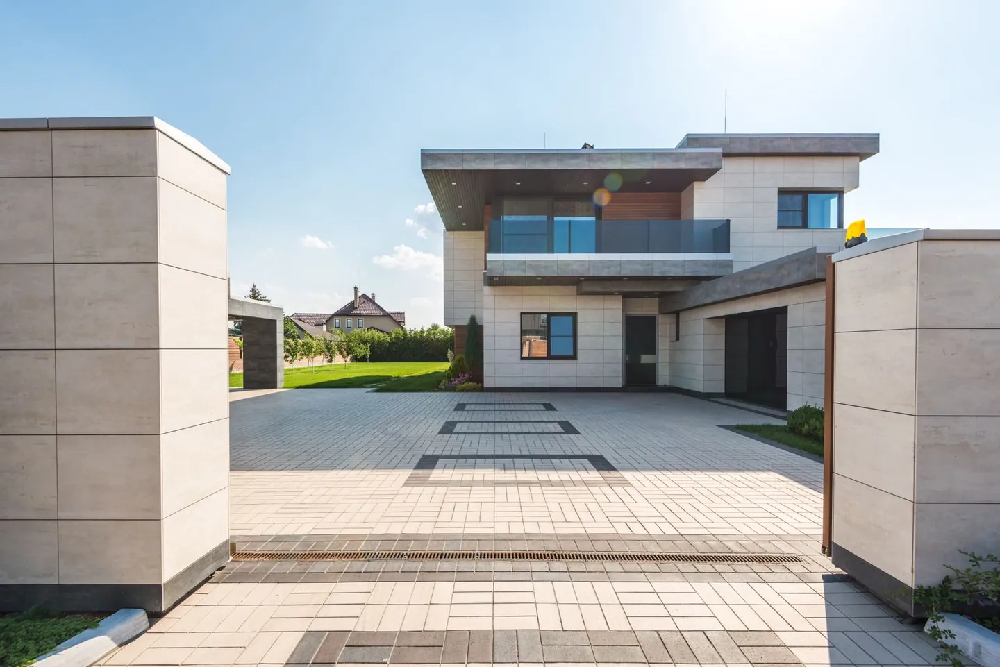
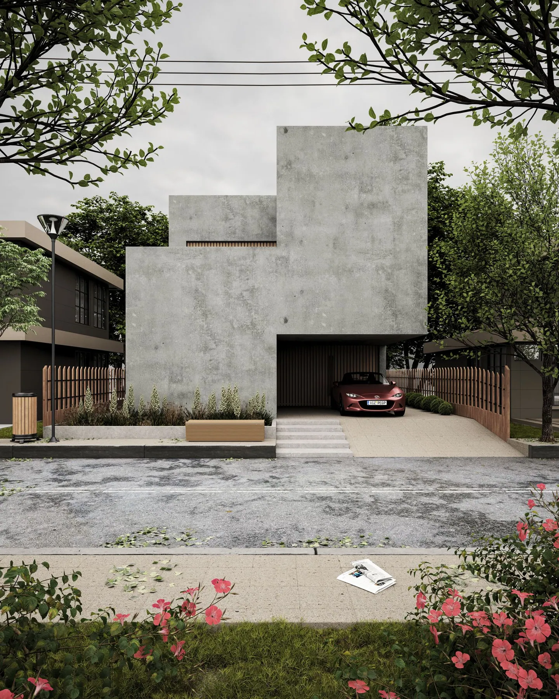

Casas residenciales / 03
Proyecto 03
EN DOCUMENTACIÓN
Estamos preparando este espacio. Mientras tanto, explora una selección de referencias visuales de esta categoría.





Usa las flechas, el teclado o desliza para explorar. Reproducción automática opcional.
EL SIGUIENTE ESPACIO PUEDE SER EL TUYO